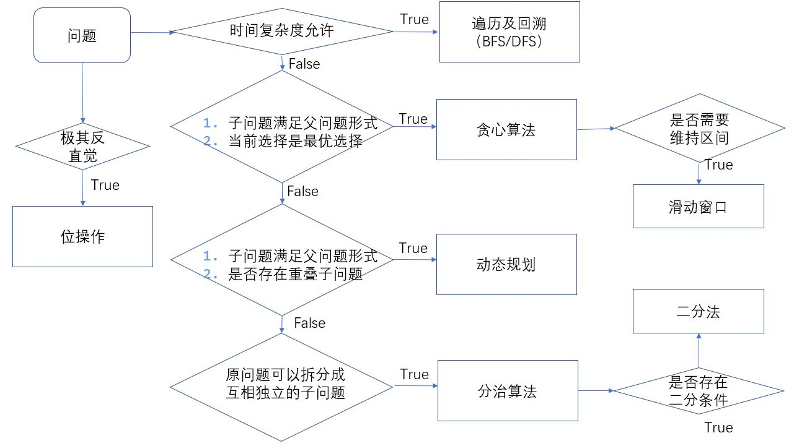

一些说在前面的话
解决问题往广义说可能是计算机学术上的新创造，可能是计算机工作中遇到的具体问题。但这里是狭义的，如果有什么实用价值的话是专门针对算法笔试中或者考试答题的，于是就有了一些基本的假设和前提能以尽可能缩小方法论的范围从而能让人易于理解也便于学习。
假设:
- 问题都是有解的，这个假设看上去像废话，但这是根本前提，笔试的形式限制了它问题的规模和可解性。这就是考试和实际问题最大的区别，考生面对的是前人解决过许多次的问题并且考试作为筛查手段一定有它的规范性，所以一定存在某种方法的穷举可以找到问题的答案，这篇文章所做的就是穷举方法。
- 算法题目局限在计算机层面上局限于内存和cpu的交互（内存视为整体），这意味着在考虑问题的时候可以忽略因为任务调度带来的压力，多请求并发的合理tradeoff，和内存超过限制后和硬盘的交互等。即工程细节被忽略了，而仅局限于解决一个逻辑上的问题。
- 考察范围的局限性：这和第一条不存在重复。如果解决的是解决方式知识范围存在于整个人类知识体系里的而不是具体的几种里，那这种测试是不现实的。所以问题的解决方法也是可以被穷举而得的。
思路选择

贪心
拿到一个没有直接思路的问题先去考虑是否有贪心的方式求解，这是符合直觉的，如果取局部的最优最终指向全局的最优，那就尽情地获得局部的最优吧，那一定是好的。
贪心有两条基本要求：
- 子问题满足父问题形式
- 当前选择是最优选择
问题1：不含 AAA 或 BBB 的字符串（https://leetcode-cn.com/problems/string-without-aaa-or-bbb/）
给定两个整数 A 和 B，返回任意字符串 S，要求满足：
- S 的长度为 A + B，且正好包含 A 个 ‘a’ 字母与 B 个 ‘b’ 字母；
- 子串 ‘aaa’ 没有出现在 S 中；
- 子串 ‘bbb’ 没有出现在 S 中。
示例：
输入：A = 1, B = 2
输出："abb"
解释："abb", "bab" 和 "bba" 都是正确答案。
解决思路：在选择当前字符的时候，选剩余长度多的那个字母，如果构成三连了，则选另一个。证明以上思路是容易的，注意题目要求一定存在解，而在当前做出的选择如果导致最终不可行，可以假设存在一个可行的解，那个可行的解是可以变换到当前解的。（不予以详细证明）
一个问题如果可以发现它的贪心性质，那很好，因为贪心意味着所有问题到当前节点不需要再考虑过往的不良影响，避免了所有的回溯，编码会简单很多。贪心的复杂度一般为$O(n)$。
动态规划
贪心算法可以被看做一种不需要回溯dfs，再每一层搜索的时候，看着最好的去就行了；而动态规划可以被视为一种剪枝，可以记录搜索过的路径，所以动态规划可以解决更多的问题（贪心也是动态规划的一种），但也因此需要付出相应的空间复杂度去存储路径。
DP所要满足的条件：
- 子问题满足父问题形式
- 是否存在重叠子问题
问题2：不同路径 II（https://leetcode-cn.com/problems/unique-paths-ii/）：
一个机器人位于一个 m x n 网格的左上角 （起始点在下图中标记为“Start” ）。
机器人每次只能向下或者向右移动一步。机器人试图达到网格的右下角（在下图中标记为“Finish”）。
现在考虑网格中有障碍物。那么从左上角到右下角将会有多少条不同的路径？
输入：obstacleGrid = [[0,0,0],[0,1,0],[0,0,0]]
输出：2
解决思路：到达任一一点之前一步一定在其左边或者上边，所以把这两点的路径总数加和即可得到到达当前点的路径数。状态转移方程：$dp[i][j] = dp[i-1][j] + dp[i][j-1]$
是否能使用动态规划，只用看是否一个问题依赖且仅依赖于几个相同形式子问题的解，这几个子问题的解作为参数传入函数变化得到父问题的解，这就是状态转移方程。
分治
贪心和DP是通过限制搜索路径（无回溯和剪枝）完成加速搜索的，但分治则是通过改变问题（搜索）的规模去完成加速的，它的时间复杂度详见Master’s Method。
DP所要满足的条件：
- 原问题可以拆分成互相独立的子问题
问题3：数组中的第K个最大元素（https://leetcode-cn.com/problems/kth-largest-element-in-an-array/）:
在未排序的数组中找到第 k 个最大的元素。请注意，你需要找的是数组排序后的第 k 个最大的元素，而不是第 k 个不同的元素。
输入: [3,2,1,5,6,4] 和 k = 2
输出: 5
解题思路：快排思路，如果k落在了partitionPoint左边，就继续搜索左边，否则搜索右边。
什么时候使用分治？一个问题如果可以拆分成子问题而又不存在重叠的子问题，那就是使用分治的时候。
遍历及回溯
遍历的本质是一种暴力模拟所有情形，因为所有的问题在拿到的第一直觉都是遍历所有可能的方案去解决，它并不巧妙而且形式极其固定。但最后的防线是必要的，这种思路的可行性仅取决于一点，是否有可以接受的时间复杂度？
该思路具体的方法有两种，DFS和BFS。
问题4：腐烂的橘子（https://leetcode-cn.com/problems/rotting-oranges/）:
在给定的网格中，每个单元格可以有以下三个值之一：
- 值 0 代表空单元格；
- 值 1 代表新鲜橘子；
- 值 2 代表腐烂的橘子。
每分钟，任何与腐烂的橘子（在 4 个正方向上）相邻的新鲜橘子都会腐烂。
返回直到单元格中没有新鲜橘子为止所必须经过的最小分钟数。如果不可能，返回 -1。
输入：[[2,1,1],[1,1,0],[0,1,1]]
输出：4
提示:
1 <= grid.length <= 10
1 <= grid[0].length <= 10
解决思路：典型的bfs题目，搜索的层数变化即使分钟数的变化，最终有多少层即需要多少分钟，如果不能覆盖所有的节点，返回-1。
问题5：找树左下角的值（https://leetcode-cn.com/problems/find-bottom-left-tree-value/）
给定一个二叉树，在树的最后一行找到最左边的值。
输入:
2
/ \
1 3
输出:
1
解决思路：典型的dfs题目，每搜索到一个最深的深度时，记录第一个出现的节点，最后的记录即是答案。
问题3：N皇后https://leetcode-cn.com/problems/n-queens-ii/)
n皇后问题研究的是如何将n个皇后放置在n×n的棋盘上，并且使皇后彼此之间不能相互攻击。给你一个整数n ，返回n皇后问题不同的解决方案的数量。
1 <= n <= 9
皇后彼此不能相互攻击，也就是说：任何两个皇后都不能处于同一条横行、纵行或斜线上。
解决思路：遍历所有皇后的摆放位置（剪枝：前n层的皇后后，之后的皇后不可以有列，对角线冲突），如果合法则ans+1。
遍历的可行性依赖于时间复杂度和问题分析，如：
- 问题一的时间复杂度为$O(n)$，n为全部桔子数量
- 问题二的时间复杂度为$O(n)$，n为全部节点数量
- 问题三的时间复杂度为$O(n!)$，n为棋牌长度
实现遍历通常来说是代码量较大的，而且通常与其它思路背道而驰，所以在决定使用遍历之前，先根据题目条件筛选，通常以下几种情况可以采取遍历的思路：
- 问题规模n很大，则遍历的复杂度要控制在$O(n)$~$O(n log(n))$之间
- 问题规模很小，并且明确要求返回所有结果时，通常遍历时必然思路。
- 当其它方法均不可行时，使用遍历（暴力求解）
二分法
二分法是分治思想的一种具体体现，但使用范围极广所以单列。使用二分法的标志很明显，在一个排序的数组上，并且当前不能接受遍历的复杂度，二分法只有一个作用，把某个步骤的$O(n)$复杂度降为可以接受的$O(log(n))$复杂度。
问题4：寻找两个正序数组的中位数（https://leetcode-cn.com/problems/median-of-two-sorted-arrays/）
给定两个大小为 m 和 n 的正序（从小到大）数组 nums1 和 nums2。请你找出并返回这两个正序数组的中位数。
输入：nums1 = [1,2], nums2 = [3,4]
输出：2.50000
解决思路：通过取出nums1的前i个元素和nums2的前k-i个元素构成nums1.length个新的数组，这些新数组则满足一个全序关系
- 如果nums1取出的最后一个元素大于剩余nums2的第一个元素，则这个划分一定在中位数划分的前面。
- 如果nums2取出的最后一个元素小于剩余nunms1的最后一个元素，则这个划分一定在中位数划分的后面。
- else:则这个划分一定是一个中位数划分。
看出二分法不困难，但使用二分法需要一些经验，难点在于如何编写比较条件，通过比较条件可以知道二分搜索该往前还是往后。看出这个条件就是使用二分法的关键所在。
位运算
有些问题提出来了非常反第一直觉的时间及空间复杂度要求，那可以尝试位运算
统计二进制中1的个数
int countNum1(int a){
int i = 0;
while(a){
a &= a - 1;
i += 1;
}
return i;
}
子集枚举
{2,5,9}的所有子集
000000 { } 0
001001 { 9 } 1
010010 { 2 } 2
011011 { 2, 9 } 3
100100 { 5 } 4
101101 { 5, 9 } 5
110110 { 5, 2 } 6
111111 { 5, 2, 9 } 7
异或运算
a ^ b ^ b = a